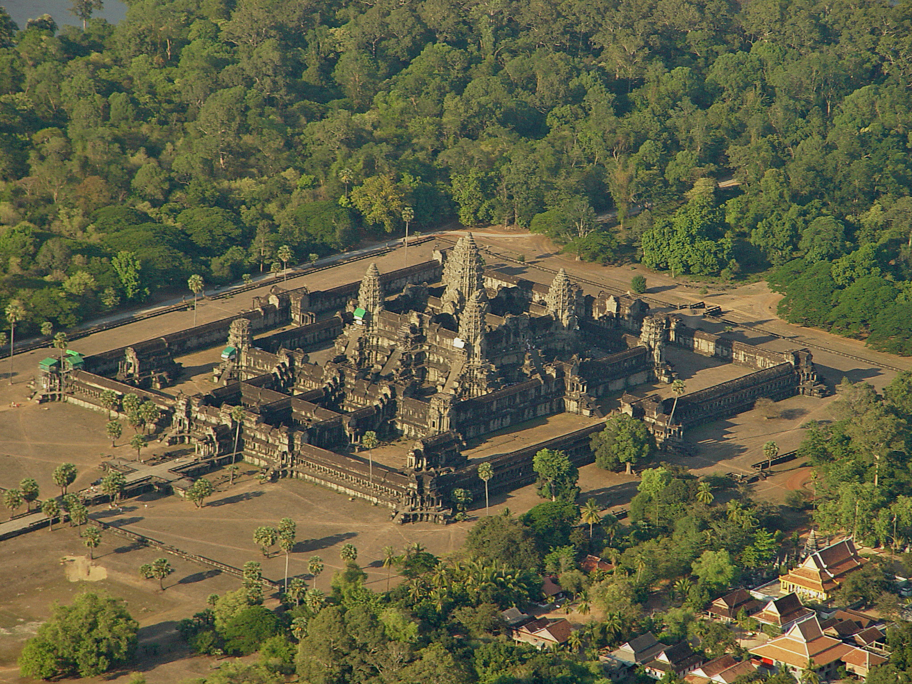

Angkor Wat
Angkor Wat é o maior complexo de templos religiosos do mundo, localizado no Camboja. Construído no século XII pelo rei Suryavarman II, foi originalmente dedicado ao deus hindu Vishnu e, posteriormente, convertido ao budismo. O complexo é uma representação arquitetônica do Monte Meru, lar dos deuses na cosmologia hinduísta, cercado por um vasto fosso e muros intricadamente esculpidos.
Informações Gerais
| Característica | Detalhes |
|---|---|
| Localização | Siem Reap, Camboja |
| Construção | Início do século XII (por volta de 1113–1150) |
| Fundador | Rei Suryavarman II |
| Religião original | Hinduísta (Vishnu); depois budista |
| Área do complexo | Cerca de 162 hectares |
| Fosso | 190 metros de largura; 5,5 km de comprimento |
| Patrimônio Mundial UNESCO | Desde 1992 |
Curiosidades
- Angkor Wat significa "Cidade Templo" em khmer.
- É o maior edifício religioso do mundo, com mais de 162 hectares.
- Aparece na bandeira nacional do Camboja — é o único país do mundo com um edifício em sua bandeira.
- As paredes do templo possuem cerca de 800 metros de baixos-relevos com cenas mitológicas e históricas.
- A cidade de Angkor, da qual o templo faz parte, era a maior cidade pré-industrial do mundo, com até 1 milhão de habitantes.
- O templo foi "engolido" pela selva por séculos e redescoberto por exploradores europeus no século XIX.
Imagen
